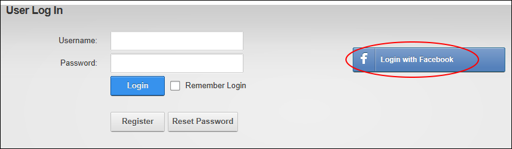

Logging in with Facebook
How to login to a DNN site using your existing Facebook account. This allows you to login without needing to create a new user account for this site.
-
Click the Login link (typically located in the top right corner of each page) - OR - Navigate to an Account Login module.
- Click the Login with Facebook button to go to the Facebook website.

- On the Facebook Login page, enter your email and password and then click the Log In button. If you don't have a Facebook account, you can choose to create one now. If you are already logged into your Facebook account on this computer, you can skip this step.
- Select the groups of users who will be able to view posts created using DNN. E.g. Everyone, Friends (the default setting), Only Me, Custom, Close Friends, Family, etc.
- Click the Go to App button to return to the DNN site and complete your login.
-
See "Configuring Facebook Authentication"